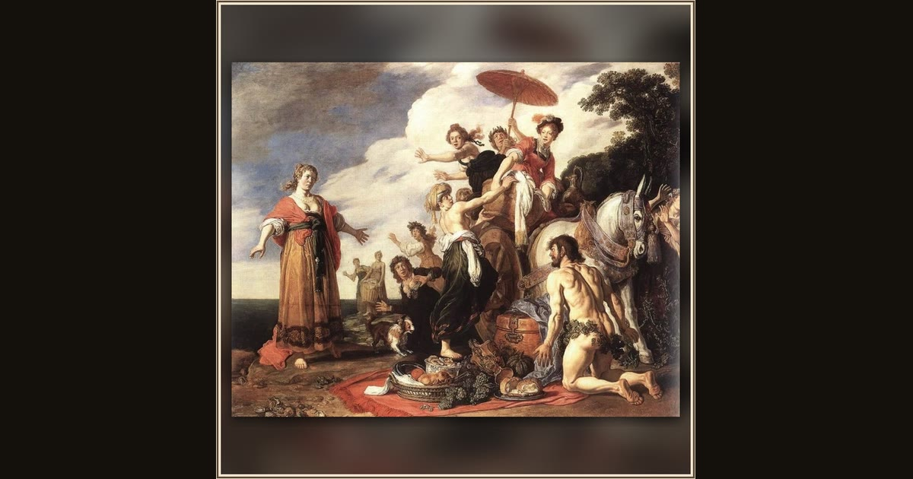

Odysseus and Nausicaa
Pieter Lastman · 1619 · Alte Pinakothek · Munich, Germany
Nausicaa’s cart of fresh laundry, a flurry of startled maids, and one very ragged hero — Lastman fills the beach with life on the day Odysseus is saved. Explore its place in Book VI of the Odyssey.